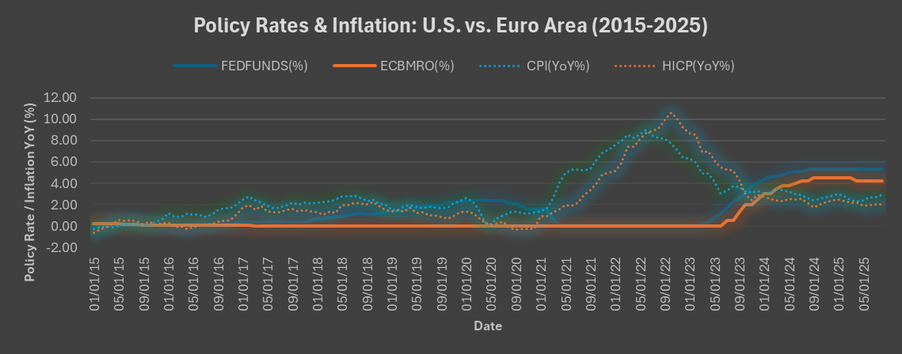
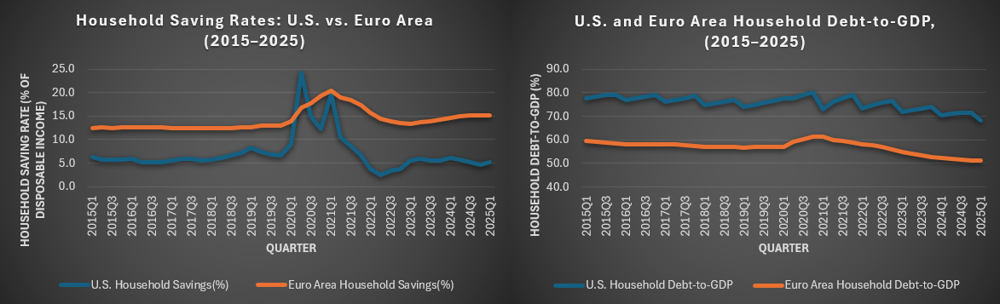
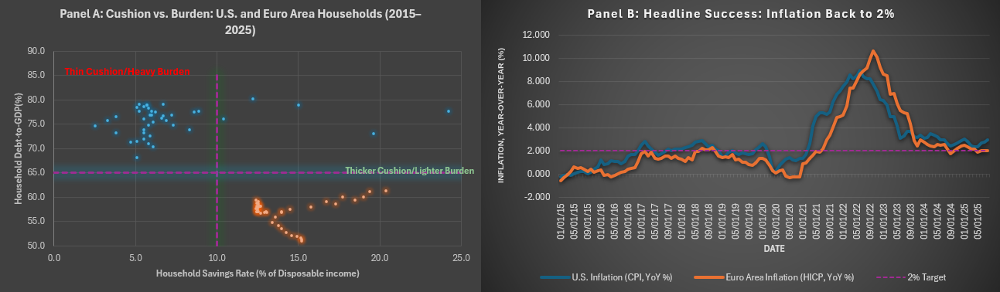

Do central bank wins translate to household wins?
The Finding
In the end, both the Federal Reserve and the European Central Bank achieved their narrow mandates of disinflation between 2023 and 2025. Inflation converged toward 2 percent, unemployment remained stable, and financial systems avoided crisis. Growth diverged more sharply: U.S. real GDP averaged about 2.8 percent in 2024, while the Euro Area ran at about 1.5 percent in the first half of 2025, still well below the U.S. pace.
Yet beneath those aggregates, household balance sheets told a different story. From 2023 to early 2025, U.S. households had savings rates hovering around 5 to 6 percent and debt levels in the range of 68 to 74 percent of GDP. By contrast, Euro Area households maintained significantly higher savings rates of about 13 to 15 percent and lower debt ratios of roughly 51 to 55 percent of GDP. These indicators show that while the macro picture converged, the micro foundations of resilience diverged.
Exhibits
Exhibit 1: Policy rates and inflation paths, U.S. vs. Euro Area, 2015 to 2025

Exhibit 2: Household saving rates and debt-to-GDP, U.S. vs. Euro Area, 2015 to 2025

Exhibit 3: Headline success vs. household reality, U.S. and Euro Area, 2015 to 2025

Why It Matters
Euro Area member states maintain more robust social welfare systems and stronger worker protections, reinforcing household resilience even amid slower growth. The United States, by contrast, delivers faster expansion but leaves households more vulnerable.
The lesson for both institutions is clear: monetary policy outcomes must not be assessed in isolation, but in concert with fiscal and social policy, domains neither central bank governs.
Method Note
Data. Policy rates are the federal funds rate (FRED) and the ECB main refinancing rate (ECB). Inflation is U.S. CPI and Euro Area HICP, year-over-year. Unemployment and real GDP growth (year-over-year) are U.S. series from FRED and Euro Area series from Eurostat. Household saving rates and household debt-to-GDP come from the Bank for International Settlements. Monthly series run from 2015 to 2025. Unemployment, GDP growth, and the Phillips curve cover 2023 to 2025. Household series are quarterly and run through early 2025.
What was compared. Each series was compared across the U.S. and the Euro Area over the same window. The question was whether disinflation toward the 2 percent target came with stable unemployment and continued growth, and whether household balance sheets looked the same on both sides.
Limitations.
- The rate series ends August 2024. Any claim about late 2024 rate cuts depends on an external source.
- Policy rates in Exhibit 1 are shown with a 12-month lag to reflect transmission effects.
- The differences cannot be attributed to monetary policy alone. Fiscal and social policy sit outside the central banks' mandates and outside the scope of the data.